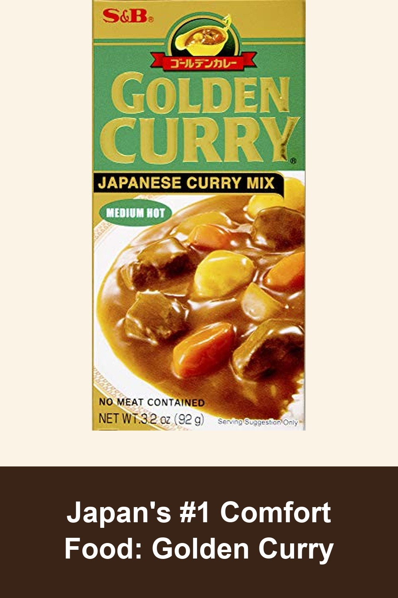
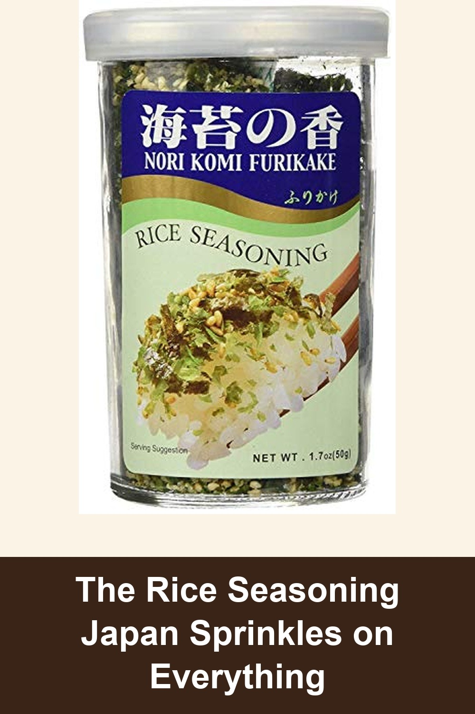
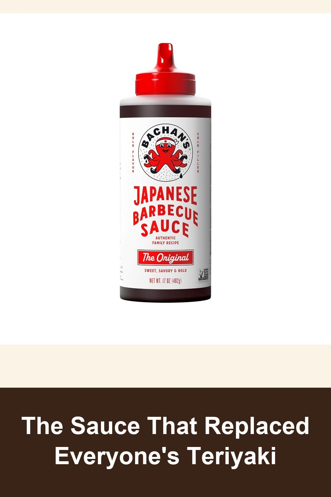

S&B Golden Curry Japanese Curry Mix, Medium Hot, 3.2 oz
The curry roux block found in nearly every Japanese kitchen — melt a few cubes into simmering broth with vegetables and meat for rich, restaurant-style curry in 15 minutes. #1 bestseller in Curry Sauce, a household staple for decades.
This has been a favorite quick curry sauce in our home for decades. It comes in mild, medium hot and hot, and even the hot isn't an unbearable heat. It's a great comfort food if you like curry.— verified Amazon buyer
View on Amazon →
Nori Fume Furikake Rice Seasoning, 1.7 oz
A classic Japanese furikake blend of seaweed, sesame, and salt — sprinkle it over rice, onigiri, or salads for instant umami. Ajishima's original recipe, an Amazon's Choice bestseller for over a decade.
It gives just the right mix of a little salt, a little crunch, and a very subtle hint of sweetness at the end. I put it on everything: salads, canned chickpeas, cottage cheese, you name it. It turns plain, everyday food into something much more interesting.— verified Amazon buyer
View on Amazon →
Bachan's Japanese Barbecue Sauce, The Original, 17 oz
A family recipe turned #1 bestselling barbecue sauce in America — thin, pourable, and packed with soy, mirin, ginger and garlic. Works as a marinade, glaze, or dipping sauce for nearly anything on the grill.
Bachan's is my favorite BBQ sauce and has been a staple in my pantry for years... from a family owned company that only uses the best of the best. Out of all the flavors my favorite would be the original — feels like a hug from my bachan.— verified Amazon buyer
View on Amazon →